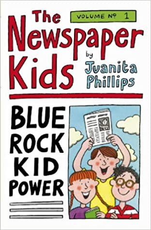
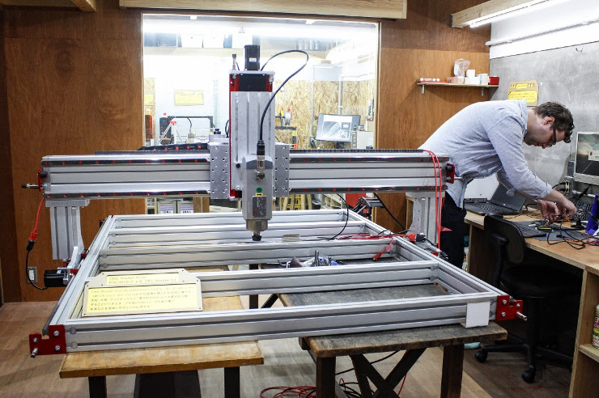
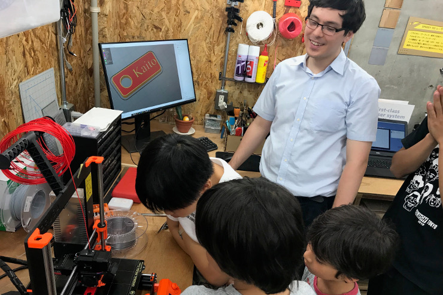
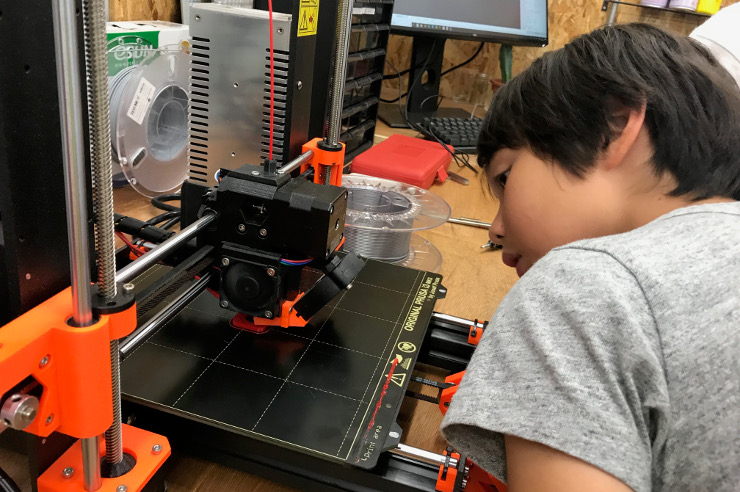

We Can All Learn to Code!
From Elementary School to University and Beyond... Boost your Tech Education
Our Boot Camps and After School Programs are Designed to Equip Students with Practical Skills
Learn From the Best


Why Code?
An Essential Skill

You'll need coding, no matter what your career ambitions are. Coding is like
reading in the
previous century: it's the new literacy.
Countries around the world have started to recognize that and they are adding coding to the
elementary school curriculum.
Learn more >
Not Just Coding

Learning Coding strengthens scientific skills. They will also acquire essential
leadership qualities
such as logical and critical thinking, problem solving, autonomous learning ability,
diversity (cross-cultural) understanding,
creativity, teamwork and communication.
Learn more >
40% of All Jobs Lost?

Artificial Intelligence and Automation put a high number of today's job at risk.
Surprisingly these are not just blue-collar but also white-collar jobs. They might be
replaced
by new jobs requiring new skills. Do you want to Work with A.I. or Compete with
A.I.? Even with
engineers doing the heavy lifting for you, you'll still need to understand what coding is
about.
Learn more >
Curriculum
Junior Coders
2-hour twice a week: ¥42,000 / month
Web App Builders
2-hour twice a week: ¥36,000 / month
Data Science Explorers
2-hour twice a week: ¥36,000 / month
üá¨üáß Emerging Fluency
2-hour twice a week: ¥25,000 / month
Our weekly classes are
- 3pm to 5pm
- 4pm to 6pm
- 5pm to 7pm
- 10:30am to 12:30pm
- 1:30pm to 3:30pm
- 3:30pm to 5:30pm
- 4:30pm to 6:30pm
Meet Our Team

Avery
I am a life-long lover of language, having studied Linguistics and Japanese at the
University of Sydney.
I have written and performed original stand-up comedy for over two years, debuting an
hour-long solo show at the 2019 Melbourne Fringe Festival,
as well as co-writing, directing, and sound-designing on indepedent theatre productions
across the Melbourne scene.
I've also been writing stories, poetry, and lyrics for my musical compositions for over 10
years.
I am passionate about helping kids to find new, exciting ways to express themselves,
whatever form that may take.
My fascination with all things Japanese has led me at last to Kyoto, where I'm excited to
join Kyoto Lesson!
Alex
Learning to code has been one of the most fulfilling achievements of my life.
Several years ago, I taught myself Python as a way to automate repetitive tasks at a desk
job. In 2019, I moved to Kyoto and attended an adult web development bootcamp,
which, incidentally, was in the same building as Kyoto Lesson! After this, I taught students
in subsequent classes and found
this experience incredibly fun.
In my career, I've explored the tech scene in Silicon Valley and built movie props in LA.
Now I find myself at a startup in Kyoto, contributing to the company's web projects and
coaching the CEO on his English. I enjoy working with diverse groups of people and
giving them the tools they need to succeed. At Kyoto Lesson, I aim to share my hunger for
learning and taking on new challenges.

Ashley
I have always enjoyed teaching. I tutored students when I was in high school and I’ve worked
at an English conversation school for the past four years.
Teaching is one of my biggest passions, but I also love art, design, literature, culture,
and people in general.
I am half-Japanese and half-American. I grew up in South Carolina until I was 13 and moved
to Gunma, Japan for junior and senior high school.
I moved to Kyoto after I was accepted into Doshisha University. I’m currently still studying
sociology there while working part-time.
I really feel that English education in Japan focuses too much on studying from textbooks
and getting high scores.
Language is so much fun and I want to share this with children who are trying to learn
English in Japan.
I’m excited to work in a totally new environment and combine study with play.

Louis
I am currently studying at the French International School Kyoto. Computer science is one of
my major.
I am both French and Japanese and fluent in both languages. I grew up in Europe and moved to
Kyoto about 10 years ago.
I have a passion for soccer and fast vehicles. Only by the time I was legally allowed to own
one, did I realise that nice motorbikes or cars were rather expensive!
And that's one of the reasons I've decided to study on my own both finance and computer
science,
two fields where I thought I could quickly monetize my knowledge and expertise.
The positive side effect was that I really enjoyed both fields and ever since I want to
learn more about both and
most importantly, I want to also share this knowledge with others. This is what brought me
to teaching and
I look forward to teaching coding to other students too!

Kris
Growing up, I had a handful of teachers who inspired me to be a teacher as well. So, I went
to school to get a double masters in Childhood Education and TESOL,
and after a trip to Japan in 2012, knew what I wanted with my future.
When it comes to kids, I believe they can achieve anything and that they are only limited by
their imagination and drive. I believe my role as an educator is to help
them unlock their potential and enjoy learning through various mediums such as play,
stories, music, activity, etc.
I love exploring and learning new things, and am a bit of a bookworm. (I rigorously study
J.R.R. Tolkien in my free time), and am also passionate about martial arts,
cinema, and music.
I’m excited for new opportunities, and am always looking for ways to learn and improve my
teaching methods to adapt and assist the upcoming generation, giving them
the confidence to become global citizens

Tora
I love both learning languages and teaching them in general. I am fluent in English and
Japanese, and I am also studying French and Korean as I'd like to be a
multilingual speaker. I have had exposure to English ever since I was one year old and I
have experience working as an English tutor, and TA at high school in the past
four years.
I was born in Saitama, but I grew up overseas. I spent four years in Hong Kong, three years
in India, and two years in Dubai. I moved to Kyoto for senior high school.
I studied in Houston for a year as an exchange student during my high school life, and I
also studied at The University of British Columbia before graduating high
school. I am currently a fourth year student of Ritsumeikan University and majoring in
International Relations.
Speaking is the most important way to study English. The reason why I like languages is
because there is lots of fun to have conversations with many people with
different backgrounds. I am looking forward to sharing my experience overseas.
David
I have worked with children for over 30 years and especially focus on fostering children's
creativity and sense of play. I also have experience in computer science and several other
science-related fields. I've started coding at the age of 10, and I was part of the first
generation of "computer whiz kids".
My work with kids has included afterschool teacher, camp counselor, and kindergarten teacher
in
both U.S. and Japan. My experience with computers includes applications in cobol, html,
javascript, among others. I am also active as staff for a scientific society in
Japan.
I was born and grew up in Europe, but moved to the U.S. when I was 7.
I speak French, Portuguese and American Sign Language, and basic Japanese.
I live with my wife and daughter in Kyoto.
Alan
I believe that coding is an essential skill that all children should pick up, as early as
possible.
So when we moved to Kyoto with my wife and four kids, one of the first thing I look for was
a proper
coding school for my children. I wanted a school where children would think by themself and
learn by doing.
As I could not find anything satisfying, I decided to take the matter into my own hands and
to start a coding school.
And that's how Kyoto Lesson was born.
I am originally from France and studied in the U.S. Before moving to Kyoto, I was working as
a trader for over 15 years in Tokyo, Hong Kong and Singapore.
During my career in banks, I had to teach myself to code as this allowed me to automate
several repeatitive tasks I had to do as a trader.
Since then, I've never stopped coding.
Testimonials
"Computer science is often thought to be exclusively for students with a strong mathematical
and/or scientific background.
However, although I specialize in literature, I was able during the camp to experiment it
and that really sharpened my interest for this subject.
It was a very rewarding and most probably valuable experience in the long run. I'd like to
thank Alan for his patience and his pedagogy!"


“Who would have thought that coding could be fun! Learning with Alan is!
We can improve popular games, create websites or address practical challenges.
It is always a great pleasure for my two kids to join one of Alan’s coding boot camp”
“My boy loves Kyoto Lesson. Alan is nice and patient.
He teaches the kids how to think. Even though I have little idea of what they are doing
when listening to the presentation, the only thing I am sure is that what the kids are
learning now is important for their future.”


My son has joined the Coding Boot Camp twice so far. Unlike other programming schools,
Kyoto Lesson teaches students the fundamentals of coding in a very easy-to-understand way,
such as encrypting information when sending emails over the Internet as well as sorting
algorithm. It's not just coding a game with Scratch. Students learn way beyond that.
As far as English is concerned, most of the students come from international schools with a
very good level of English and have no problem taking the course. In addition, Alan explains
in a simple and easy to understand way. Many students are Japanese, hence even if you are
not
good at English, you can join too.
On the last day of the coding boot camp, students give a presentation in English in front of
the parents, to present their project and explain what they learned from their class.
Every day during the boot camp, Alan sent us by e-mail a very detailed explanation of what
the students had done during the day. This is very interesting to read for parents and
allows
you to follow what students are doing.
I've registered my children to the coding school as I thought it could be more meaningful
for
their future rather than playing video games.
At first they learnt the basic of block programming and animations in Scratch.
Then they moved on to more advanced skills while having fun modifying the popular video game
Minecraft. The students need to think about the code they have to write in order to change
or
do something in the video game. After that, the students started to build their own website.
When I listen to my children, I feel that they are having a lot of fun while shaping their
thoughts to build what they imagine.
Alan is teaching the lesson. He has a way to fluently alternate between one-on-one teaching
and
group work/discussion. He is teaching fluently both in English and French. Alan's rich
experience
and knowledge brings to the class an international, cutting-edge teaching. This is an
amazing
plus for the class.
The ability to foster and create such logical thinking will prepare children for the future
and
will bring them skills that are very relevant in the age of Artificial Intelligence.

After few months going to Kyōto Lessons, my 8 year old son started to understand how to make
simple games with Scratch, create artefacts in Minecraft and his own small webpage.
His interest is growing thanks to the hands-on lessons stimulating both logical thinking
and creativity.
Through seemingly casual fun time, bits of academic knowledge and structured thinking get
acquired.
Warmly recommended to all curious kids!
Computer Science skills, especially coding skills are very useful to create web
applications.
I have therefore been looking for a good school that can teach these to my son.
Alan, the founder of Kyoto lesson, has acquired very practical and extremely relevant coding
skills through his profesional experience and could thus design an ideal curriculum. On top
of
that he is very good at teaching.
Alan is teaching basic coding logic through very practical projects. In contrast with other
coding schools that my son attended previously, Alan takes as much time as needed to let
students find solutions by themself, rather than just making them copy lines of codes
without
thinking. The things he wants to teach them is process and inquiry. This is what I like very
much about this school!
Coding Boot Camps
Intensive Immersion Program
Coding Boot Camps are offered during
the school holidays
. These camps are intensive classes, 3-hour per day over 5 days.
Students will work as a team on a project that they will aim to complete by the end of the
boot camp.
The goal in these boot camps is to find a solution to a real-world problem either faced by a
company, a non-profit or related to a student's interest.
Students will start with Scratch, a visual programming language developed by one of the
research laboratory at the Massachusetts Institute of Technology (MIT) before diving into
JavaScript and Python, two programming languages extensively used by software developers.
- Level 0: My First Game Built with Scratch
- Level 1: Deep-dive into Scratch
- Level 2: Modify Minecraft
- Level 3: Build my Own Website
- Level 4: Build my Own App
- Level 5: Dynamic Website: JavaScript
- Level 6: Deep-dive into JavaScript
- Level 7: Making Game with PyGame
- Level 8: Deep-dive into Python


English Holiday Camps üá¨üáß
English Intensive Program

English Holiday Camps are offered during the School breaks.
The camp are intensive classes, 3-hour per day, over 5 days:
Monday to Friday from 9:30am to 12:30pm
The focus is on speaking and listening comprehension and with the ultimate
goal
of
improving student's fluency when interacting with others.
All our teachers are native English-speakers.
Students will be divided into groups depending on their level of English.
We have a maximum of 9 students per class (per teacher).
English Holiday Camps are roughly organized around the idea of weeklong projects,
- Fantasy Newspaper
- Movie Makers
- Manga Mania
- And more...
In addition, there will be time for other miscellaneous activities, such as:
- Games,
- Puzzles,
- Language workshops,
- Songs,
- Reading time, ...
Program Cost: ¥20,000 / week (15 hours class)
+ ¥3,000 one-time registration fees (for new students only),
that includes a remote 1:1 English assessment
Location: Community Lab N5.5 (Google Map here)
529 Izumicho, Shimogyo Ward, Kyoto, 600-8188, Japan
〒600-8188 京都府京都市下京区和泉町529
Fantasy Newspaper
In the Fantasy Newspaper children create a newspaper.Throughout the project, children take on a variety of roles, such as editor, reporter, copy editor, photographer, artist, and publisher.
At the same time, children assign themselves departments like Current Events, Theater, Science, Opinion.
Wearing different hats gives children the chance to express and develop their language skills and expressive ability in different contexts.
- As editors, children discuss content and make decisions together, promoting teamwork and leadership.
- As reporters they create content in areas of interest to them.
- As copy editors, they use and develop specific language skills.
- As artists, they develop their imagination and ability to make connections.

Hardware Prototyping
Three Complementary Streams
Computer hardware and electronic are essential components of Computer Science.
As you improve your coding skills, you will need to understand what are the various hardware
limitations you are exposed
to in order to write a more efficient code.
With the Internet of Things (or IoT) becoming an important area of research across the
globe, hardware prototyping is
especially relevant nowadays and a logical addition to our curriculum.
Our Hardware curriculum focuses on giving our students a hands-on maker experience.
Our students are making actual objects from sketching all the way to the actual prototype
and our program is splitted into three main parts:
- 3D Printing & Modeling
- Electronic (Micro:Bit Block Editor, Arduino, Raspberry Pi...)
- Robotic (Kamibot, Lego Mindstorms, Drones...)

This program is taught in partnership with Kyoto Makers Garage (KMG)
It will take place at KMG's studio. (500m from KRP, GoogleMap
link)
where students will be able to work on the most common maker stations and tools:
- 3D printers: Stereolithography (Formlab) and Fused Deposition Modeling
- CNC (a computer-controlled cutting machine used for cutting various hard materials, such as wood, composites, aluminum, steel, plastics...)
- Laser cutting machines
Location:
〒600-8846
京都府京都市下京区朱雀宝蔵町73-1
73-1 Sujakuhozocho, Shimogyo Ward
Kyoto, 600-8846, Japan
Learn more >

Hands-on Boot Camps
Our first Boot Camp is an introduction to 3D printing.
This is one of the key future technologies, enabling businesses to cut costs, reduce time to
market,
produce stronger and lighter parts, improve efficiency, and solve a myriad of other
challenges.
That’s why we think it’s important for our students to have an understanding of the
technology in the 21st century global economy.
Learn more >






Tech Entrepreneur
Cutting-Edge Curriculum
Our curriculum is meant to bring non-technical students to a level that allows them to independtly build their own product. During that journey, they will learn the best approach to problem solving and the technics to quickly assess the potential of their idea, test their hypothesis, minimize their risk, design and build a MVP and then iterate from there. We focus only on the most relevant and up-to-date tools used across the Tech Industry.
- Learn to Build Websites
- Create a Back-End App with JavaScript
- Create a Front-End App with React
- Analyze Data with Python
- Analyze Data with SQL
- Get Started with Machine Learning
Our Tech Entrepreneurs will learn how to write production ready code and how to lead others. During this immersive startup program, they will interact with different roles at the company (engineers, designers, product managers, project managers) and they will also have a chance to be one of them if they choose to. At the end of the sprint, each team demo their progress in front of the product manager. At the end of the class the teams will have the opportunity to present their final product.
Two Programs, Flexible Learning
Our Tech Entrepreneurs are often full-time University students with non-technical major.
We have thus designed our program in the most flexible way possible to insure that it is
compatible
with their otherwise busy schedule.
Each session consists of a class followed by a short project to be completed by the students
at home or in the class, alone or as a group.
Through our program, students will acquire two essential skills: building web applications
(JavaScript) as well as data-driven decision tools (Python).
Each skill is further split into 3 sub-skills, so that our Tech Entrepreneurs can learn at
their own
pace. While it is best to have these 3 sub-skills completed in a short time-interval, we
also
understand that this might not always be possible when studying for another degree in
parallel.
To complete each skill, our students will further be able to chose between two programs:
- Intensive Boot Camp program (3hr+3hr/day, 5d/week for 12 weeks, ¥600,000)
- Continuous Learning program (4hr+4hr/day, 2d/week for 24 weeks, ¥675,000)
A new class will start once at least six students have registered. Do not hesitate to contact us for more details.
About Us
Build 1st, Theory 2nd
To be successful at something you need to be surrounded by experts that guide you along the
way.
That’s exactly what we did with the design of our immersive startup class. Instead of the
traditional
approach where students sit in a formal classroom, learn the theory first, and solve
fictitious
problems, our students are essentially software engineers that works for a startup and
create actual
products. They will need to solve real-world problems through decomposing, researching
independently
as well as managing their projects. The more academic part of the teaching will come only as
and when
needed to keep their projects moving forward. This environment, technologies, and processes
are
identical to successful startups and companies around the world.
Learn more >
The Tech Scene
Our founder has built over the years an large network within the Tech Industry. Being
permanently in contact with the
brigthest individuals in this field allows Kyoto Lesson to provide cutting edge education to
its students. All the
tools and technics that we are using are always aligned with the indusctry best practices
and always up-to-date.
Moreover, Kyoto Lesson provides a unique opportunity for its students to get directly in
touch with Tech leaders: for
more advanced classes, we'll be working on projects in collaboration with some of the
largest tech companies (Google,
Apple, Facebook, Amazon, Uber, Airbnb...), smaller startups (local and foreign) as well as
with non-profit organizations.
Learn more >
Google Project >
About the founder
Alan is a French national who studied at a prestigious US University.
He holds three master's degree in Engineering, Statistics and Business Administration as
well as an All but dissertation PhD degree (ABD) in Probability and Finance.
Alan has been working as an option trader for several top-tiers investment banks for 15
years in Japan, Hong Kong and Singapore. Being an enthusiast python coder, Alan was also
during that time in charge of automating all the front office activities.
He is also the co-founder of HealthCo, a MedTech which mission is to make patient’s medical
data portability a reality.
Alan also recently co-founded a FinTech, taking advantage of arbitrage opportunities seen on
crypto-currency markets (bitcoin...).
Learn more >
Where to Find Us?
Community Lab N5.5
(250m from Gojo station, GoogleMap link)
〒600-8188
京都府京都市下京区和泉町529
529 Izumicho, Shimogyō ku,
Kyōto City, Kyōto 〒600-8188


Groving Base
(500m from Gojo station, GoogleMap link)
〒600-8449
京都市下京区新町通松原下ル富永町107番地1
107-1 Tominaga-chō, Shimogyō ku,
Kyōto City, Kyōto 〒600-8449